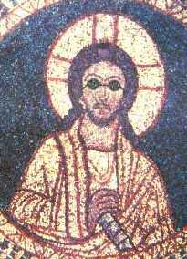

-
«”Dado que conocemos tan poco del universo, ¿cómo podemos tener la absoluta certeza de que Dios no existe?” ¿Cuántas veces nos encontramos con esta pregunta (o una variación de la misma)?»
-
Diez razones por las que la cerveza es mejor que Jesús, autor desconocido (Internet)publicado el 25/09/2004
-
¿Desea ser un creacionista?, Dave Williams, traducido por Juan Carlos Cisneroscreacionismo, evoluciónpublicado el 24/03/2003
«El creacionismo depende de un mal entendido fundamental de cómo la ciencia funciona. Si Ud. de alguna manera descubre como la ciencia real funciona, muchos argumentos creacionistas perderán su fuerza. En consecuencia, es absolutamente necesario que Ud. evite desarrollar conocimiento científico…»
-
Críticas cristianas a la ciencia, Guido Núñezcreacionismo, gravedad, física cuántica, física nuclear, geometríapublicado el 04/05/2002
«¿Sabía usted que la teoría gravitatoria es la única que posibilita que la gente se tire de los edificios y muera? ¡Exactamente, posibilita el suicidio! Entonces, ¿debemos los cristianos sinceros de corazón permitir que una barbaridad inmoral como esa sea aceptada y enseñada a nuestros hijos en clase? ¿Sabía usted que si se aboliera, podríamos volar como los arcángeles?»
-
Joãozinho e a tarefa de religião, Ferney Yesyd Rodríguez (traduzido por: Moisés B. Böll)publicado el 01/03/2002
Humor

Comentarios
Comments powered by Disqus